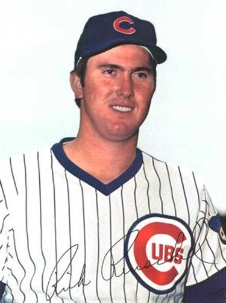

Rick Reuschel "Big Daddy"
Career Highlights & Facts
(Facts are AI-generated and may require verification)
- Combined with a sibling to record the only brother-to-brother shutout in major league history.
- Earned two Gold Glove awards while demonstrating elite defensive skills at the pitcher position.
- Maintained a signature pitch-to-contact style that relied on a heavy sinker and varied delivery speeds.
Would you like to find out more about Rick Reuschel?
Player Biography
Rick Reuschel November 6, 2025 / in BioProject - Person 1970s All-Stars , 1980s All-Stars Siblings / by admin This article was written by Tim Castelli “He has a brain in his arm.” – Syd Thrift 1 That high baseball IQ was a critical part of Rick Reuschel’s success. It led him to trust a pitch-to-contact approach that was not flashy but required supreme control and unwavering confidence. He defied the stereotypes of a star pitcher. “Big Daddy” was unathletic-looking, with an everyman’s build. He was unassuming, impassive, and lacked overpowering velocity. Thus, he was often underestimated, treated as a curiosity rather than a talent. A remarkable career would prove that wrong. Beginning as a dependable ace on poor teams, he then endured injury-plagued years and finished with an unlikely resurgence. Farm Roots and Fast Track to Big Leagues Ricky Eugene Reuschel was born on May 16, 1949, in Quincy, Illinois, to George and Geneva (Buss) Reuschel. 2 They were farmers near Camp Point, a small town on the far central-western edge of Illinois. George and Geneva had eight children; Rick was the fourth, following his brother Paul , born in 1947, who also played in the major leagues. 3 The Reuschels attended Central High School in Camp Point; Rick’s 1967 senior class had about 80 students. 4 After high school, both brothers went to nearby Western Illinois University (WIU), but through different circumstances. Paul was drafted out of high school by Cincinnati in 1965, but opted to go to WIU, and eventually was drafted and signed by the Chicago Cubs in 1968. Rick, however, went undrafted at that point. Rick excelled in his two years on the WIU varsity, 5 going 16-4 with a 1.94 ERA. 6 In 1970, his junior year, he posted a 40-inning scoreless streak and was an NAIA All-American. 7 With his success at WIU, Reuschel was selected in the third round (67th overall) of the 1970 amateur draft by the Cubs. Shortly after the draft, he joined their short-season Class A team, the Huron Cubs of the Northern League. After a rough opener, 8 Reuschel quickly proved to be one of the top pitchers in the league. After his success at Huron, the following year, he was promoted two levels to the Class AA San Antonio Missions. Rick was eventually reunited with Paul, who had opened the season with the Cubs’ AAA club, but after a slow start was sent down to San Antonio in June. “Rick was 8-1 when I got to San Antonio,” Paul later reflected, “and I realized that he had caught up with me.” 9 In 1972, Rick continued his rapid ascent in the Cubs system. He earned an invitation to Chicago’s spring training and performed well. However, he was cut and sent to Class AAA Wichita along with Paul. 10 After dominating at Wichita, the Cubs promoted Rick on June 16. His tenure in the minor leagues encompassed only 42 games (325 innings), a 26-8 record, and a 2.38 ERA. The Quiet Workhorse The Cubs’ Hall of Fame manager, Leo Durocher , said about Reuschel’s callup, “I didn’t bring this kid up just to watch him sit on the bench.… This kid caught our eye in spring training when he was one of the invited farmhands in camp. And then he proved down in Wichita that he really has it.” 11 The 23-year-old Reuschel, listed at 6-foot-3 and 215 pounds, debuted on June 19, 1972, versus San Francisco. He was summoned from the bullpen in the fourth with two outs and a runner on first. Waiting for him at the plate was Bobby Bonds , who was coming off an All-Star 1971 season. Reuschel struck out Bonds, preventing a bigger inning, and keeping the Cubs in a game they eventually won. Reuschel’s go-to pitch was the sinker, thrown at a variety of speeds. The veteran Chicago catcher J.C. Martin remarked, “It’s a heavy ball – sinks in on right-handed batters.” 12 Complementing the sinker was a fastball that was also never at the same velocity twice, and a mix of breaking balls. 13 The right-hander’s motion was the epitome of simplicity, a smooth rocking start with no overhead windup, a quick slide step, and a varied low-arm slot release. Reuschel ended the year 10-8 with a 2.93 ERA for the Cubs, who finished second in the NL East. Despite receiving no Rookie of the Year votes 14 , he delivered a notable performance in an overlooked season. Advanced metrics highlight the season’s true value. Among starting pitchers with at least 10 wins from 1946-2024, 15 his 2.07 Fielding Independent Pitching (FIP) 16 was the second-lowest for rookies, 17 and 17th-lowest overall. 18 In his second season, Reuschel and the Cubs got off to a fast start before fading in midsummer. True to his nature, Reuschel succinctly diagnosed his problem, “I was short-arming the ball.” 19 The bad habit, a failure to get full arm extension, had crept into his otherwise reliable delivery. For Reuschel, despite his second-half issues, it was another solid season. He finished 1973 at 14-15 with a 3.00 ERA, and his 5.8 pitching WAR was the first of six times in eight years he led Chicago. 20 Coming into 1974, the Cubs cleared out many of their aging 1969 stalwarts , including Hall of Fame pitcher Ferguson Jenkins . Reuschel viewed Jenkins as a role model, saying, “He never got himself in a hole. I watched him and I saw that if you make them hit the ball, you’ll get them out.” 21 Despite being known for a low-key, almost emotionless demeanor, Reuschel was a fierce competitor on the mound. During the season, he had a heated discussion with umpire Bruce Froemming after hitting Ron Cey . In the previous game, Cey had driven in seven runs with two home runs against Cubs pitching. Reuschel said, “He can throw me out if he wants to. But I’ve got a job to protect, too.” Regarding Cey, “He’s got to be shown he can’t go out after that pitch away from him.” 22 The year was a struggle for Reuschel and the Cubs, as he went 13-12 on a last-place team. His 4.30 ERA was the highest for a season in which he had over 15 starts. The following year, Rick gained some overdue satisfaction when Paul reached the big leagues. That satisfaction was offset by his belief that Paul’s persistent arm issues and declining effectiveness were because of overuse by San Antonio in 1970. 23 The Cubs promoted Paul on July 24 and debuted him the following day against the Mets. Rick started the game, the first of their 21 games pitching together . 24 On August 21, Rick started against the Dodgers and went 6 1/3 scoreless innings. Paul relieved him in the seventh inning and closed out the 7-0 shutout. They combined for the first and only brother combination shutout in major-league history. The brothers pitched together three more times in 1975, but with lesser results. Rick finished 11-17 in 1975 with a 3.73 ERA for the fifth-place Cubs. Highlighting the lack of support, 15 of his 23 (65%) quality starts (QSs) 25 resulted in a loss or no decision. 26 Following three straight fifth- or sixth-place finishes, Reuschel’s frustration with Chicago’s owner, Philip Wrigley , bubbled over during the offseason after numerous front-office personnel changes. He said, “. . . I’m not happy with the whole situation. With all those people leaving . . . something must be going wrong.” 27 For a publicity-shy player, Reuschel always had a surprising amount of candor about ownership. In 1976, Reuschel went 14-12 with a 3.46 ERA in 260 innings, his heaviest workload. His record again understated how well he pitched. He had a QS in 70% of his 37 starts for the fourth-place Cubs. Reuschel’s command made opponents take notice; Reds Hall of Famer Joe Morgan once deadpanned, ”I don’t think he knows how to throw a high pitch.” 28 Reuschel started strong in 1977; by the end of June, he was 11-2 and was named to his first All-Star game. Known for his low-key demeanor, he later commented, “I get excited, but I try hard not to let it show.” 29 A rare glimpse into his excitement for the game emerged on July 28 against the Reds. 30 After coming on in relief in the 13th inning of a 15-15 game, he singled in the bottom half and later scored the winning run, throwing his arms in the air and smiling broadly as he crossed home plate. 31 This moment highlighted his habitually overlooked athleticism, including his speed. Cubs first baseman Larry Biittner noted, “He fools you, it doesn’t look like he’s going fast but once he gets that first step he’s moving.” During his career, he pinch-ran 17 times, and he was also one of the better bunting pitchers, ranking sixth in sacrifice bunts over the 1946-2024 seasons. 32 With the victory on the 28th, he was 15-3 with a 2.14 ERA and the leading contender for the NL Cy Young award. However, he soon developed a sore back, which reduced his effectiveness for the remainder of the season, although he still finished with a 20-10 record and third in the NL Cy Young voting. 33 His 9.5 WAR led all pitchers for the year and ranks 34th for 1946-2024. 34 Despite his success, many players still underestimated him. Ted Simmons , the Cardinals’ Hall of Fame catcher, addressed the misperceptions of Reuschel, “All I’ve heard for the last four years is that he’s a big cheeseburger. Things like how’s that cheeseburger going to get anybody out? I’ve got news for the guys who’ve been saying that. He’s no cheeseburger, never was. He’s a top sirloin.” 35 Discussing his success in 1977, Reuschel gave a prescient nod to sabermetrics, articulating the difference between what he could control and what he could not. “I didn’t do anything different. My other stats are all the same. I feel like I’ve thrown the ball well enough my whole career to win more games than I have.” 36 The brotherly tandem ended in June 1978, when Paul was traded to Cleveland. For the year, Rick was 14-15 with a 3.41 ERA for the third-place Cubs. In 1979, a stellar August (7-0, 1.63 ERA) propelled him to 16-7 and on pace for a second 20-win season. However, he struggled in September (2-5, 5.02 ERA) and finished the season 18-12 with a 3.62 ERA as the team fell to fifth. Chicago continued to sink in the standings in 1980, finishing in last place. Meanwhile, Reuschel had another solid year, going 11-13 with a 3.40 ERA, including no-decisions or losses in 13 of 23 (57%) QSs. Coming into 1981, to save cash and rebuild with younger talent, the Cubs traded away Hall of Famer Bruce Sutter and other veterans. Starting in spring training, rumors swirled about Reuschel also being dealt. 37 Chicago’s season started miserably with a 12-game losing streak in April; by June 4, they had sunk to 10-36. The long-anticipated trade happened on June 12, just hours before a seven-week work stoppage began, when Reuschel was dealt to the Yankees for Doug Bird , Mike Griffin, and $400,000 cash. Reuschel later said about the trade, “I was not really thrilled about moving . . . I was more upset about leaving Chicago than excited about joining the Yankees. The more time passed, the more excited I got. It’s a good opportunity to join a team that’s going somewhere.” 38 The trade to a contender gave Reuschel his first postseason experience. In the expanded strike-year playoffs, he started Game Four of the ALDS against the Brewers and gave up four hits and two earned runs in six innings of a 2-1 defeat. The Yankees eventually won the series in five games. In the ALCS, he did not pitch. The Yankees stated that it was because of a blister. 39 Reuschel disagreed, however, saying soon after, “There was nothing wrong with me; I could have pitched.” 40 The Yankees swept the series against the A’s. Heading into the World Series against the Dodgers, he had not pitched in two weeks, a tough change in routine for a workhorse control pitcher. The long layoff showed, as Reuschel posted a 4.91 ERA in two appearances. He started Game Four, leaving the game in the fourth inning with a 4-2 lead, in a game eventually won by the Dodgers, 8-7. In the Dodgers’ title-clinching victory in Game Six, he threw 2/3 of an inning for the Yankees in middle relief, but by then Los Angeles had a commanding lead. The strike snapped his streak of eight seasons starting over 35 games and pitching over 230 innings. Despite a strong 3.11 ERA, he finished the season 8-11. “Rick Reuschel keeps his mouth shut and keeps the ball low. Always has.” That is how Mike Lupica of the New York Daily News characterized him. After joining the high-profile Yankees, Reuschel described how he would fit in: “No matter what I do here, it’s gonna be easy for me to stay in the background. The background is where I like it.” 41 However, it turned out that Reuschel did not “keep his mouth shut” or maintain a low profile during his stay with the Yankees. The off-field drama started shortly after the World Series, as Reuschel and the Yankees got into a dispute over the annuities from his Chicago contract. 42 Once settled, Reuschel signed a two-year contract extension. Reuschel later summed up his stay with the Yankees and owner George Steinbrenner : “It was a family in New York, but I didn’t enjoy Papa.” 43 The Road Back His heavy workload in the prior 10 seasons had taken its toll. What began as shoulder soreness in spring training eventually required two rotator cuff surgeries in 1982, keeping him off the mound for the entire season. 44 But true to form for his Yankees stint, the injury became contentious. New York placed Reuschel on the 60-day disabled list to start 1983. He thought he was ready to pitch and filed a grievance through the Major League Baseball Players Association against New York about his placement on the DL. After resolving the grievance in late May, Reuschel reported to AAA Columbus. But that stint was short-lived, as they released him in early June. 45 Reuschel later remarked, “It wasn’t that they didn’t give me a chance, it was that their minds were up. It wouldn’t have mattered what I did.” 46 In a widely anticipated move, he signed with the Cubs as a free agent in late June 1983. He rehabbed in Class A and eventually pitched in four games for Chicago in September. Recalling his rehab, he admitted, “Must have been seven or eight times I was ready to quit.” 47 Regarding why he kept going, Reuschel summarized his choice, “…you have to make a decision whether you want to play or not. I decided I wanted to play. Then you do whatever it takes.” 48 In 1984, Reuschel held a spot among Chicago’s starters from late April to early July, but after several trades to bolster the rotation, he was demoted to the bullpen. For the rest of the season, he primarily worked in middle relief, ending with a 5-5 record and 5.17 ERA in 19 games. Capping off a disappointing year, he was left off the roster for the Cubs’ first postseason appearance since 1945. Reuschel later summed up the year: “Nineteen eighty-four was very bittersweet . . . It hurt me especially, because I spent eight years there in previous bad times and now we had a good team with a chance to go somewhere and I couldn’t contribute.” 49 After his struggles, Chicago granted him free agency in November. “I thought I was done,” he conceded. 50 Reuschel had good cause for concern. At this time, full recovery from rotator cuff surgery was considered unlikely, and his struggles in 1983-1984 seemed to confirm it. 51 With little interest from other clubs, he signed a minor-league contract with Pittsburgh. In response to his surgeries, Reuschel had reinvented by subtraction, further diminishing the role of his fastball, prioritizing first pitch strikes, and learning to “prey on hitter’s greed.” 52 His new approach took hold in 1985, as he started strong with the Pirates’ AAA club, the Hawaii Islanders, and was promoted on May 21. 53 In a career renaissance , he went 14-8 with a 2.27 ERA and 159 ERA+ 54 (fifth best in baseball). His wins accounted for 30% of the last-place Pirates’ 46 victories after his callup. In recognition of his turnaround, he was named The Sporting News ’ Comeback Player of the Year. Even more than 1977, this was the quintessential “Reuschel” year – consistent, unflashy excellence on a less-than-stellar team. His QS% was 92% (24 out of 26 starts), ranking fifth-best over 1946-2024. 55 By comparison, the teams of the four pitchers ranked above him averaged a .592 winning percentage, far higher than the Pirates’ .354. 56 The minimalist approach that defined his pitching reinvention mirrored the intelligence and quiet restraint of his personality. The Pirates’ AAA pitching coach, Chuck Hartenstein , observed, “Rick’s dry wit is like his fastball. He doesn’t use it all that often, but when he does, it’s devastating.” 57 Reuschel once quipped, “You throw each pitch with a purpose. Even if the first pitch misses, it can tell you what to do with the next pitch. Of course, sometimes you’re not listening.” 58 In 1986, Reuschel did not maintain the same level of excellence, going 9–16 with a 3.96 ERA for another last-place team. But the challenges of playing on a cellar-dweller resulted in a loss or a no-decision in 14 of his 21 (67%) QSs. Reuschel rebounded in 1987 and, after a 10-year hiatus, was named to his second All-Star team. The Pirates were a young, improving team, but still far out of contention. Therefore, on August 21, after Reuschel cleared waivers, they traded him to the Giants for Scott Medvin and Jeff Robinson . After Reuschel joined San Francisco, they played at a near .700 rate and won the NL West. Against the Cardinals in the NLCS, he struggled in two starts, as the Giants fell in seven games. For the year, he went 13-9 with a 3.09 ERA and was third in NL Cy Young Award voting. Reuschel also earned his second Gold Glove, the other coming in 1985. Winning the award at ages 36 and 38 underscores his superior defensive skills, which were long overlooked. 59 Joan Ryan of the San Francisco Examiner encapsulated Reuschel’s personality and approach to pitching. “Perhaps Reuschel’s clean separation of his personal and professional lives is an extension of his pitching philosophy: eliminate clutter. Reuschel is baseball’s answer to Hemingway. His work is spare and even simple, but the end result is often art.” 60 Indeed, Reuschel’s compact motion, with no embellishment, mirrored an Ernest Hemingway principle: “Never confuse movement with action.” 61 In the offseason, Reuschel again defied his easygoing image, requesting a one-year extension or trade. 62 San Francisco quickly agreed to the extension. 63 Far from a vocal leader, Reuschel led by example. Bob Brenly , a catcher for the Giants, reflected on his impact, “He came over to a ball club with young, talented arms, and showed them how easy it can be to win in the big leagues. [He] would rather have them hit the first pitch and get out of the inning. He’s changed their ideas on how to pitch in the big leagues.” 64 Echoing this idea, pitcher Mike Krukow , his teammate in Chicago and San Francisco, said the favorite advice Reuschel gave him was, “The harder they hit it, the softer I throw it.” 65 Reuschel’s determination to keep his private life away from public view was evident leading up to the 1988 All-Star break. 66 Even as reports about his upcoming marriage circulated, he refused to comment. He was selected to the All-Star team, but declined to participate because of his wedding the day of the game to Barbara Thompson, sister of his former Cubs teammate Scot Thompson . 67 It was his second marriage. He and Barbara would have one daughter, and he had a daughter and son from his first marriage. Reuschel finished 1988 at 19-11 with a 3.12 ERA, for a Giants team that slumped to fourth. San Francisco manager Roger Craig , regarded as one of the era’s top pitching authorities, remarked, “He changes speeds better than any pitcher I have ever seen. I’ve seen guys with control as good as his. But I’ve never seen anyone who can throw three fastballs to the same spot at three different speeds like he can.” 68 Entering 1989, he was the NL’s oldest pitcher and second-oldest player at 40 years old. 69 His remarkable comeback continued: he had a 12-3 record at the break and started the All-Star Game. 70 It was his third appearance, and for the period 1933-2024, he was the third-oldest starting pitcher in the midsummer classic. 71 But, in late July, he pulled his groin and tailed off over the remainder of the season. 72 The Giants, however, rebounded, winning their division and beating the Cubs in the NLCS four games to one. Reuschel went 1-1 against his old club, including going eight innings with no earned runs in the deciding Game Five. In the World Series against Oakland, he started Game Two, going four innings and giving up five earned runs, including an uncharacteristic four walks, in a 5-1 loss, part of the Athletics’ eventual sweep. Reuschel finished 17-8 with a 2.94 ERA and came in eighth in the NL Cy Young voting. To place his late-career surge in perspective, his 36 total wins at age 39 and 40 rank as the fourth-highest total in consecutive seasons for pitchers age 39 or older between 1946 and 2024. 73 Named the Giants’ 1990 opening day starter, he began on a winning note. But he injured his left knee in late May and went on the disabled list. In July, he had arthroscopic surgery to repair torn cartilage in that knee. 74 Returning in September, his 1.20 ERA in 15 innings brought hope that he could continue pitching at a high level. After struggling in spring training, there was uncertainty about whether Reuschel would make the team in 1991. Craig eventually announced that he would be the fifth starter. 75 But after just one start, allowing three earned runs in six innings, he was relegated to the bullpen. Reuschel tried to minimize the demotion, saying it was “just another day at the office.” He also added, caustically, “There’s no rhyme nor reason to anything that goes on around here.” 76 After a brief relief appearance on April 22, he went on the disabled list because of left knee pain. 77 A few weeks later, he told Craig, “I don’t know if I can ever pitch again.” 78 His words proved to be prophetic. The Giants released him on June 19, 1991, at the age of 42, ending his 19-year career. Characteristically, Reuschel did not hold a farewell press conference. 79 A Sabermetric Reappraisal Reuschel’s career pitching WAR of 68.1 80 prompted Craig Muder, Director of Communications for the Baseball Hall of Fame, to state, “The number is so shocking for traditional baseball fans that it almost looks like a typographical error.” 81 Decades after his career ended, the advent of advanced analytics has put that “shocking” number into context, generating a reevaluation of Reuschel’s career and his place in baseball history. Before sabermetrics, the baseball community largely overlooked his value using traditional statistics and “fame” measures. 82 These metrics favored high-profile success on winning teams over sustained excellence. This viewpoint is reflected starkly in Reuschel’s sole year on the Hall of Fame ballot. In 1997, he received votes on 0.4% of the ballots, the same as Mike Scott , who won 90 fewer games with a WAR value 44 points lower. His extremely private nature also likely played a part. As Joan Ryan, a sportswriter, noted, he would not be interviewed away from the park and treated his personal matters as strictly off-limits, habits that kept him out of the spotlight. 83 Reuschel concluded his career with a 214-191 record, placing him 48th in wins over 1946-2024 and 94th all-time. The table below summarizes his significant career metrics and ranking among the 64 pitchers with over 200 wins between 1946 and 2024. Table 1: Rick Reuschel – Career Pitching Statistics (1972-1991) 8 4 Measure Reuschel Career 1946-2024 Ranking FIP 3.22 16 QS% 85 63.7 19 WAR 68.1 24 ERA 3.37 32 Innings 3,548 33 ERA+ 114 37 RE24 86 159.47 46 WHIP 87 1.275 48 These numbers describe an elite “pitch to contact” workhorse who languished on losing teams most of his career, as his .528 winning percentage (58th) reflects. His high ranking in FIP, a defense-independent measure, is primarily because of a superb HR/9 (0.6, 2nd ranking) and BB/9 (2.4, 18th). Breaking down his QS ratio further reveals more about Reuschel’s effectiveness and lack of support. In 337 QSs, his ERA was 1.83 and, by outcome: 1.31 in 179 wins, 2.03 in 77 no-decisions, and 2.89 in 81 losses. 88 Reuschel’s Wins to QS ratio is the lowest of all 64 pitchers at 63.5%. As sportswriter Joe Posnanski observed, “So much of his good work went unrecorded.” 89 With his “let ’em hit it” approach, rather than attention-grabbing strikeout numbers, Reuschel had more baserunners, resulting in a higher WHIP and RE24, and a modest K/9 (5.1, 51st) ratio. This style helps explain why, in a time that valued flashy strikeout totals, Reuschel was frequently overshadowed. Conclusion After his career ended, Reuschel slipped quietly into retirement in the Pittsburgh area, focusing on his family. Through the years, he has occasionally attended Cubs Conventions, 90 Pirate alumni events, 91 and autograph shows. 92 With his characteristic dry sense of humor, Reuschel summed up his simple approach to pitching. “Make them hit the first pitch at somebody for an out. And if they don’t do that, make them hit the second pitch at somebody for an out.” 93 This understated style, combined with his blue-collar ideal of letting his work speak for itself, and playing on many nondescript teams, resulted in little media attention. Yet his 19-year big-league career (1972-91) was defined by quiet, sustained excellence, resilience, and belated recognition of his impact. Last revised: November 6, 2025 Acknowledgments The author thanks the Baseball Hall of Fame for their support and the Huron, South Dakota Public Library for their assistance in gathering information. This biography was reviewed by Rory Costello and Howard Rosenberg and checked for accuracy by SABR’s fact-checking team. Photo credits Rick Reuschel with Chicago Cubs and New York Yankees: SABR-Rucker Archive. Rick Reuschel in college: Courtesy of Western Illinois University Athletics. Sources The author consulted: James, Bill, The New Bill James Historical Baseball Abstract, (New York City: Free Press, 2001); Dewan, John and Zminda, Don, The Stats 1990 Baseball Scoreboard , (Ballantine Books: New York City, 1990); Koca, Gary, Great Chicago Cub Baseball Players Since 1876 , (Self-published, 2015); Thrift, Syd and Shapiro, Barry, The Game According to Syd , (New York City: Simon & Schuster, 1990); Vorwold, Bob; What It Means to Be a Cub: The North Side’s Greatest Players Talk About Cubs Baseball , (Chicago: Triumph Books, 2010). The author also consulted information from Reuschel’s clipping file at the National Baseball Hall of Fame Library, Baseball Reference.com, FanGraphs, Retrosheet.org, LA84 Foundation’s The Sporting News Player Contract Card, Weiss Questionnaire, and Ancestry.com. Notes 1 Bob Hertzel, “Man with the Educated Arm,” The Sporting News , August 17, 1987: 14. 2 “Obituary of Geneva Marie Reuschel,” Herald-Whig , https://www.legacy.com/us/obituaries/whig/name/geneva-reuschel-obituary?id=25121922 . 3 “WIU Pitcher Reuschel Signed by Chicago Cubs,” The Western Courier , July 3, 1968: 12. ( https://collections.carli.illinois.edu/digital/collection/wiu_courier/id/31338/rec/3) . 4 Estimate taken from Senior Class photos in 1967 Central High School yearbook. Ancestry.com, “U.S., School Yearbooks”; School Name: Central High School; Year: 1967. 5 In spring 1968, freshmen were not eligible to play on the varsity team. “The NCAA’s First Century,” Joseph Crowley, NCAA Publications : 46, https://www.ncaapublications.com/productdownloads/AB06.pdf . 6 Career ERA from WIU Baseball Record Book; 1969 Wins and Losses from https://goleathernecks.com/honors/hall-of-fame/rick-reuschel/200 ; 1970 Wins and Losses from https://www.thebaseballcube.com/content/player/17060/ . 7 “Pitching Staff Named as WIU’s Win Factor,” The Western Courier , May 13, 1970: 19, https://collections.carli.illinois.edu/digital/collection/wiu_courier/id/37032/rec/173 8 “Expos’ Loop Home Opener Ruined by Cubbies Sunday,” The Daily Plainsman , July 6, 1970: 7. 9 John Swagerty, “Aeros Soft-Spoken Brother Act Has Wichita on the Wing Early,” The Sporting News , May 27, 1972: 37. 10 The Cubs moved their AAA team from Tacoma to Wichita in 1972. 11 Edgar Munzel, “Bruins Strike It Rich with Big Rick on Mound,” Th e Sporting News , July 8, 1972: 9. 12 Richard Dozer, “Reuschel Stymies Phillies,” Chicago Tribune , June 27, 1972: 45. 13 Joe Goddard, “No-Rattle Reuschel Big Cub Noisemaker,” The Sporting News , September 15, 1979: 6. 14 The 1973 NL Rookie of the Year award was won by Jon Matlack with a WAR of 6.1. Only two other players received votes: Dave Rader (1.6 WAR) and John Milner (1.5 WAR). In comparison, Reuschel had a 2.9 WAR. 15 I used the 1946–2024 seasons for comparative purposes throughout the article. This range includes the first full post-WWII season (one year before 1947 integration) and covers the modern schedule era and changes in bullpen usage. I stopped at 2024 because it is the last completed season at the time of writing. 16 FIP is similar to Earned Run Average but only uses walks, strikeouts, and home runs. It measures “if the pitcher were to have experienced league average results on balls in play,” https://www.baseball-reference.com/bullpen/Fielding_Independent_Pitching . 17 https://stathead.com/tiny/Tqlwr 18 https://stathead.com/tiny/OtPe9 19 Richard Dozer, “Reuschel Felt Hand of Defeat by Falling into Short-Arm Rut,” The Sporting News , December 8, 1973: 44. 20 All WAR values are from Baseball Reference’s pitching bWAR. Reuschel ranked second among Cubs pitchers in the other two seasons. 21 Bob Hertzel, “Reuschel Paints New Masterpiece for His Collection,” The Pittsburgh Press , June 18, 1987: C1. 22 Richard Dozer, “Rick Thinks Cubs Need Two Reuschels,” The Sporting News , June 22, 1974: 13. 23 Richard Cuicchi, “August 21, 1975: Reuschel Brothers Make History Combining for Shutout of Dodgers,” SABR.org, https: . 24 Author’s analysis of game logs from Baseball-Reference.com. See spreadsheet. “Reuschel_Statistical_References.xlsx,” tab “Rick Paul Games.” 25 A “quality start” lasts a minimum of six innings and results in three or fewer earned runs. https://www.baseball-reference.com/bullpen/Quality_start 26 Joe Posnanski, “The Outsiders: The Best Baseball Players Not in the Hall of Fame 60-51,” The Athletic , https: 27 Richard Dozer, “Reuschel Hails Cub Hill Tutor Grissom,” The Sporting News , December 6, 1975: 49. 28 Richard Dozer, “Reuschel, Biittner Deliver Big for Slipping Cubs,” The Sporting News , August 13, 1977: 10. 29 Nick Peters, “Big Daddy, the Master of Deceit,” The Sporting News , September 19, 1988: 14-15. 30 Gary Koca, Great Chicago Cub Baseball Players Since 1876 (self-published, 2018): 173. 31 YouTube, “Cubs Game-Winning Hit vs. Reds, July 28, 1977,” https://www.youtube.com/watch?v=WsVXUITJDeQ&t=2s 32 https://stathead.com/tiny/s9OE9 33 “Life on Farm a Ball for Reuschel,” United Press International , August 7, 1977. 34 https://stathead.com/tiny/eGIRY 35 Jerome Holtzman, “Reuschel Pats Cubs on Back for Leap Forward,” The Sporting News , July 30, 1977: 13. 36 Scott Ostler, “Rick Reuschel to the Press: Leave Me Alone,” Los Angeles Times , March 9, 1978: 1. 37 Joe Goddard, “You Want Reuschel? Cubs Will Lend Ear,” The Sporting News , March 28, 1981: 19. 38 Jane Gross, “Reuschel Finally Gets Yank Uniform,” New York Times , August 3, 1981. 39 Joe Donnelly, “AL Playoff Matchups,” Newsday , October 13, 1981: 82. 40 Dave Nightingale, “Guys Who Think of Leaving N.Y. Are Nuts,” The Sporting News , October 31, 1981: 24. 41 Mike Lupica, “Even Pitching for Yanks Won’t Change Reuschel,” New York Daily News , August 13, 1981: C28. 42 Murray Chass, “Reuschel, Yankees Still Apart,” New York Times , February 12, 1982. 43 Jim Kaplan, “A Family Feud in Philadelphia,” Sports Illustrated , June 11, 1984, https://vault.si.com/vault/1984/06/11/a-family-feud-in-philadelphia . 44 Murray Chass, “Reuschel Unsteady in Return,” New York Times , March 19, 1983: 41. 45 Joe Donnelly, “Release of Reuschel Costly,” Newsday , June 10, 1983: 158. 46 USA Today , July 15, 1983. 47 Bob Verdi, “Reuschel Remains His Unsinkable Self,” Chicago Tribune , October 6, 1989: 4-5. 48 Bob Hertzel, “Believer’s Reward,” Pittsburgh Press , March 2, 1986: C3. 49 Bob Vorwald, What It Means to Be a Cub: The North Side’s Greatest Players Talk about Cubs Baseball (Chicago: Triumph Books, 2010), 97, Kindle. 50 Charley Feeney, “Odyssey Continues for Rick Reuschel,” The Sporting News , August 5, 1985: 31 51 Ray Sons, “Reuschel’s Sure He Can Still Pitch,” Poughkeepsie Journal , 06/15/1983: 15. 52 Rod Beaton, “Reuschel’s Secret: Well-Stocked Arsenal,” USA Today , 06/14/1989. 53 Charley Feeney, “Retread Reuschel ‘Never Lost Faith’,” The Sporting News , 07/01/1985: 23. 54 MLB.com: ERA+ takes a player’s ERA and normalizes it across the entire league. It accounts for external factors like ballparks and opponents. It then adjusts, so a score of 100 is league average, and 150 is 50 percent better than the league average. https://www.mlb.com/glossary/advanced-stats/earned-run-average-plus . 55 https://stathead.com/tiny/zf7ip . 56 Author’s analysis of 1946-2024 seasons for pitchers with over 25 starts. Data extracted from Baseball Reference. See spreadsheet “Reuschel_Statistical_References.xlsx,” tab “QSSeason.” 57 Bob Kravitz, “Pittsburgh’s Golden Oldie,” Sports Illustrated , July 15, 1985, https://web.archive.org/web/20120122081620/http%3A//sportsillustrated.cnn..htm . 58 Bob Hertzel, “Man with the Educated Arm,” The Sporting News , August 17, 1987: 14. 59 Recognition came in a 2009 SABR study of pitchers’ fielding effectiveness , in which he ranked 28th all-time. 60 Joan Ryan, “After All Those Years, Reuschel Still the Same”; San Francisco Examiner , April 2, 1989: C-4. 61 “Hemingway Letters to Marlene Dietrich Donated to JFK Library and Museum,” John F. Kennedy Presidential Library and Museum , https: . 62 Lowell Cohn, “Reuschel’s Wrangling,” San Francisco Chronicle , November 17, 1987: D1. 63 “Giants Sign Reuschel; Forget Trade Demand,” San Francisco Examiner , December 15, 1987: F-1. 64 Malcolm Moran, “Reuschel Getting Another Chance,” New York Times , October 6, 1987: D-31. 65 Casey Tefertiller, “Reuschel Lets Batters Get Themselves Out,” San Francisco Examiner , July 29, 1988: D-1. 66 Joan Ryan, “After All These Years, Reuschel Still the Same,” San Francisco Examiner , April 2, 1989, C-4. 67 “Herzog Picks Reuschel and Thompson but Reuschel Declines All-Star Invitation,” San Francisco Examiner , July 7, 1988: B-5. 68 Rod Beaton, “Reuschel’s Secret: Well-Stocked Arsenal,” USA Today , June 14, 1989. 69 Howard Blatt, “Big Daddy’s Finesse Mesmerizes Young Mets,” New York Daily News , August 24, 1989: 81. 70 His outing was also memorable for giving up two-sport star Bo Jackson’s mammoth lead-off home run. YouTube.com, “1989 ASG: Bo Jackson Hits Leadoff Homer in First,” https://www.youtube.com/watch?v=_ht4tDHfQn4 . 71 Only Roger Clemens in 2004 and Kenny Rogers in 2006, both 41, were older. Author’s analysis of 1933-2024 seasons for oldest pitchers and starting pitchers in All-Star Game. Data extracted from Baseball Reference. See spreadsheet “Reuschel_Statistical_References.xlsx,” tab “AllStarGameAge.” 72 “Ailing Reuschel to Get Day Off,” San Francisco Examiner , July 16, 1989: C-4. 73 Author’s analysis of 1946-2024 seasons for pitchers 39 years and older. Data extracted from Baseball Reference. See spreadsheet “Reuschel_Statistical_References.xlsx,” tab “Age39_2Seasons.” Additionally, over the same timeframe, he is 24th in total wins for pitchers 39 years and older. Data extracted from Baseball Reference. See spreadsheet “Reuschel_Statistical_References.xlsx,” tab “Age39Total.” 74 “Reuschel Repaired,” San Francisco Examiner , July 11, 1990: B-5. 75 Casey Tefertiller, “Reuschel Gets Nod for Fifth Spot in Rotation,” San Francisco Examiner , April 6, 1991: B-1. 76 “Is Reuschel on the Way Out?,” San Francisco Examiner , April 15, 1991: D-4. 77 Larry Stone, “Butler Serves Giants Defeat on a Platter,” San Francisco Examiner , April 27, 1991: B-1. 78 Lowell Cohn, “Few Giants Really Knew Him but Big Daddy Left an Impact,” San Francisco Chronicle , June 20, 1991: D-1. 79 “Larry Stone, “Big Daddy Exits as Quietly as He Played,” San Francisco Examiner , June 23, 1991: C-7. 80 Value is from Baseball Reference’s pitching bWAR. FanGraph’s fWAR is nearly identical at 68.2. His total bWAR is 69.5, with 1.4 for hitting. From Baseball Reference: WAR represents the number of wins the player added to the team above what a replacement player would add. https://www.baseball-reference.com/about/war_explained.shtml . 81 Craig Muder, “#CardCorner: 1987 Fleer Rick Reuschel,” https://baseballhall.org/discover/card-corner/1987-fleer-rick-reuschel . 82 The term “Fame Measures” refers to metrics like the Black and Gray Ink tests. From Baseball Reference: “Black Ink is a measure of how often a player has led the league in “important” statistical categories.” https://www.baseball-reference.com/bullpen/Black_Ink. “Gray Ink is a measure of how often a player has been among the top ten league leaders in “important” statistical categories.” https://www.baseball-reference.com/bullpen/Gray_Ink 83 Joan Ryan, “After All These Years, Reuschel Still the Same,” San Francisco Examiner , April 2, 1989: C-4. 84 The table’s statistics are from Baseball Reference. 85 Quality Start% = Quality Starts / Total Starts. 86 From FanGraphs: RE24 or “Run Expectancy based on 24 base-out states” measures the change in run expectancy from the beginning of a player’s plate appearance to the end of it. https://library.fangraphs.com/misc/re24/ . 87 From FanGraphs: Walks plus Hits per Innings Pitched (WHIP) is a measurement of how many base runners a pitcher allows per inning. https://library.fangraphs.com/pitching/whip/ . 88 Author’s analysis of Reuschel’s Quality Starts during his career. Data extracted from Baseball Reference. See spreadsheet “Reuschel_Statistical_References.xlsx,” tab “QSGames”. “Reuschel Repaired,” San Francisco Examiner , July 11, 1990: B-5. 89 Joe Posnanski, “The Outsiders: The Best Baseball Players Not in the Hall of Fame, 60-51,” The Athletic , https: 90 Advertisement for Chicago Cubs Convention, Chicago Tribune , December 2, 1999: 4-2. 91 Chuck Greenwood, “Reuschel Resurrected Career Twice in Minors,” Sports Collectors Digest , August 21, 1998: 70. 92 Dejan Kovacevic, “Without Brace, Gerut a Lineup Scratch,” Pittsburgh Post-Gazette , August 2, 2005, E-5. 93 Stan Isle, “Mr. Efficiency Reuschel Uses a First-Pitch Plan,” The Sporting News , May 9, 1988: 7. Full Name Rickey Eugene Reuschel Born May 16, 1949 at Quincy, IL (USA) Stats Baseball Reference Retrosheet If you can help us improve this player’s biography, contact us . Tags 1970s All-Stars · 1980s All-Stars · Siblings · Share this entry Share on Facebook Share on X Share on LinkedIn Share on Reddit Share by Mail
Career Totals
| WAR | W | L | ERA | G | GS | SV | IP | SO | WHIP |
|---|---|---|---|---|---|---|---|---|---|
| 69.5 | 214 | 191 | 3.37 | 557 | 529 | 5 | 3548.1 | 2015 | 1.275 |
Statistics via Baseball-Reference.com
The Original Clue